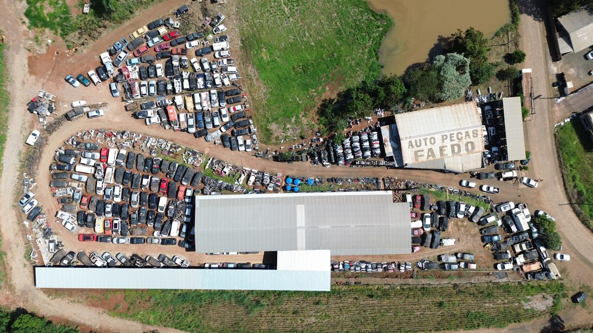

Peça certa, na hora certa
A Faedo abastece oficinas, mecânicos e motoristas com peças de procedência garantida. Do motor ao acabamento, com orientação técnica de quem entende de carro.
Por que a Faedo?
Sobre nós
Quem é a Faedo?A Auto Peças Faedo foi fundada em 2017 com o propósito de oferecer peças automotivas usadas com qualidade, segurança e preço justo. Atuamos no segmento de peças para veículos leves, nacionais e importados, buscando sempre oferecer as melhores soluções para nossos clientes. Ao longo da nossa trajetória, construímos nossa história através de trabalho, transparência, responsabilidade e compromisso, valorizando cada cliente e parceiro que faz parte da nossa caminhada. Hoje, seguimos em constante crescimento, unindo experiência, inovação e atendimento de qualidade para tornar a busca pela peça certa mais simples e segura. Auto Peças Faedo. Qualidade, confiança e compromisso em cada negócio.

Missão, visão e valores
O que nos move?Missão
Atender os nossos clientes com transparência, ética e responsabilidade, com preços justos e competitivos. Sempre trazendo inovação, profissionalismo e soluções aos nossos clientes..
Visão
Ser a referência, e atuar entre as melhores empresas no segmento de venda de peças usadas no Brasil.
Valores
- Honestidade
- Ética
- Responsabilidade
- Compromisso
Onde estamos
LocalizaçãoEndereço
PR 180 Nº 4500 — Bairro Água Branca
Marmeleiro, PR
Horário
Segunda a sexta, 8h às 12h - 13:12h às 18h
Telefone
(46) 3524-3542